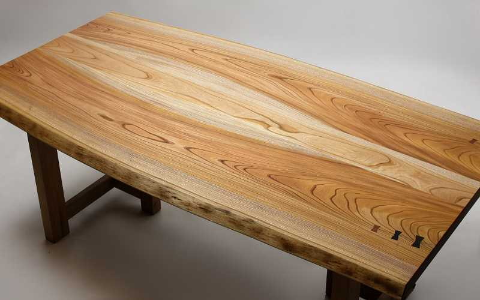

テレビでよく、ご飯を食べているだけの カットなのに何回もカメラが切り替わるのが...
皆さんは画面が変わらず音声だけだとつまらないですよね？ 私はつまらないです
なぜ私たちは同じ画面だとつまらないと感じるのか、それは...
これは脳の安全装置が作動してストレスを感じるのだそうです
なのでストレス、つまらなさを和らげるためにカメラを切り替えるのです
「...というのが当たり前」「それは論外」など、こういう風に名詞や名詞っぽいフレーズでおわること
パンッと体言止めで終わると強い印象がある
断定は「というのは〇〇だよね?」と使えば大丈夫
最後に「だと思うんだよねぇ」使うのが感想
この三つを使い分けて聞いている人間のストレスを軽減する
最後に大事なのが
表情があれば感想を映像化出来る
表情や言い方もあるが変わってくる つまり...
身振り手振りは
「こんな問題があるんだけど」と最初に話題を底辺広くとって
で、「なんでそうなのか」という理由、説明を上の段に乗っけると
最後に「だからこうしなきゃいけないと思う」というのは一番トップに置く
論理というピラミッドは底辺が大きいほど頂点の結論というのは高く出来るこれが
皆さんは物事を考えるときに頭の中を整理できていますか？私は全くできてませんよ
テーブルを頭の中だと考えてください

テーブルの上に物がいっぱいあると作業効率がやはり悪いですよね
頭の良さは基本的にテーブルの広さであるので、
どんなに頭が良くて、どんなにテーブルが広くてもその机の上がぐちゃぐちゃで物がいっぱいあると
少ししかないので結局その人は少しのスペースでしか考えられない
だからメモを取ったりして何かあったことをすぐに忘れられるようにし、テーブルの上を広くしていく
そうすると話しているときに「これも言わなきゃ」や「これしないとなぁ」という物のせいで、
テーブルがいっぱいにならないず、話しているときに話題がそれずにすみ、
相手にちゃんと言いたいことが伝わるわけです
１．単純に内容を7秒間ですべて収める２．体言止め 断定 曖昧な感想を使い分ける３．表現と身振り手振り